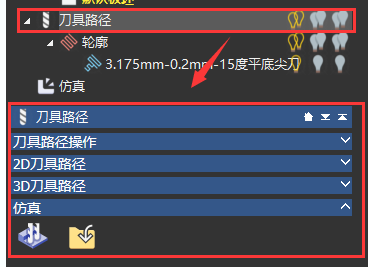

ArtCam2018功能参考手册
考虑再三，还是写成参考手册的形式，方便大家日常查找
-
-
基本概念：介绍了CAM软件的基本流程，和Artcam自己定义的一些概念
ArtCam软件使用流程

-
灰度图转浮雕，生成刀具路径。点击打开演示视频：

-
ArtCam基本操作与概念。

-
二维矢量：介绍了二维矢量的绘制与编辑，包括如下工具

-
模型信息：显示了浮雕图的宽高和深度

-
文件：常规的文件保存，打开和编辑操作

-
模型：你正在操作的就是一个模型文件，所有的功能都是针对它进行的

-
位图编辑：介绍位图各个工具的使用


-
矢量工具：介绍矢量的绘制和编辑

点击打开演示视频：
矢量绘制


-
节点编辑


-
辅助工具
1、测量：测量2点之间的长度

-
矢量编辑

3、裁剪矢量： 删除整个矢量
删除整个矢量
 把矢量线水平放下，形成的新投影轮廓。
把矢量线水平放下，形成的新投影轮廓。


7、矢量库：打开现成的矢量库，载入矢量文件
-
填充工具：介绍位图各个工具的使用

-
定位、组合、裁剪矢量


-
浮雕建模：从二维矢量向上拉起，生成2.5维的浮雕，包括如下工具
创建浮雕：介绍了如何从二维矢量拉出浮雕
点击打开演示视频：
 截面线绕2条驱动线，扫描形成，零平面封底。
截面线绕2条驱动线，扫描形成，零平面封底。
 截面线绕起始点，旋转360度。
截面线绕起始点，旋转360度。
 不同方向，不同的图像。
不同方向，不同的图像。
11、浮雕库：打开浮雕库，选择需要的浮雕
12、导入： 导入*.rlf浮雕文件
导入*.rlf浮雕文件
13、保存：导入*.rlf浮雕文件
14、沿矢量粘贴： 沿着曲线，粘贴浮雕
沿着曲线，粘贴浮雕
16、相加：浮雕1+浮雕2
17、想减：浮雕1-浮雕2
18、最高：max(浮雕1,浮雕2)
19、最低：min(浮雕1,浮雕2)
20、替换： 浮雕2替换浮雕1
浮雕2替换浮雕1
-
编辑浮雕：介绍了如何编辑创建的浮雕

点击打开演示视频：
1、光顺浮雕：让浮雕表面变得光滑
2、纹理浮雕： 通过图像文件，增加浮雕细节（类似三维中的纹理贴图思想）。1
 在Z方向，缩放浮雕高度。
在Z方向，缩放浮雕高度。
4、Z轴反转：+Z变-Z
5、反转浮雕： 镜像反转
镜像反转

8、浮雕镜像合并： 镜像浮雕
镜像浮雕
 类似双线扫描。
类似双线扫描。
 切割一小块浮雕，创建文件浮雕。
切割一小块浮雕，创建文件浮雕。
 用于注塑模型。
用于注塑模型。
 一层层切浮雕。
一层层切浮雕。
16、通过浮雕创建边界：创建某个高度的截面轮廓线
-
雕刻工具：类似捏泥巴的方式，进行浮雕创作

-
其它工具
1：不知道做啥用的
2：Z轴反转
3：Z轴镜像
快速创建宝石镶嵌矢量的工具

用于制作圆雕：圆雕还是不在这个2.5维的浮雕软件弄了吧。
点击打开演示视频： 旋转浮雕
-
刀具路径：从矢量和浮雕，生成用于雕刻机的刀路文件

todo 具体内容，下周5更新...
-
教程目录
- 1、软件简介
- 2、基本概念
- 3、二维矢量
- 4、浮雕建模
- 5、刀具路径